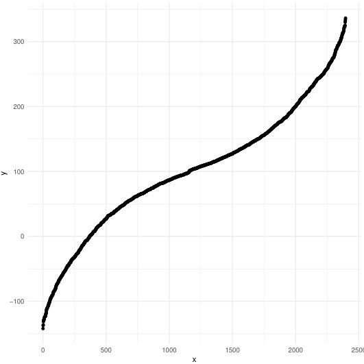
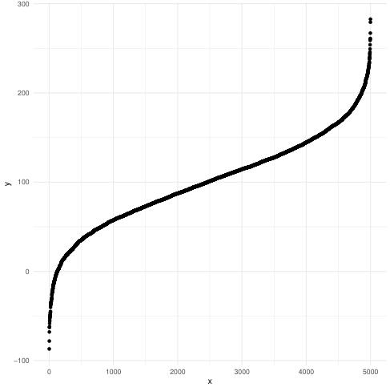
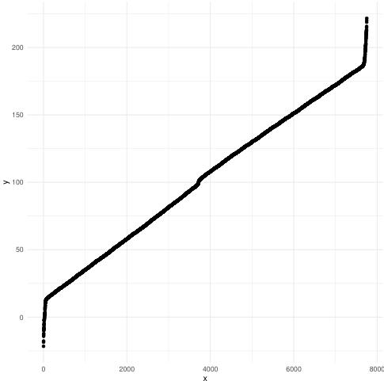

Two framework algorithms to generate a highly customizable normal distribution.
norml_gen1 is for generating normal distribution whose
standard deviation is higher or equal than 1.
norml_gen2 is for generating normal distribution whose
standard deviation is lower or equal than 1.
normal_gen1 <- function( n_inpt, mean_inpt, sd_inpt, offset_proba = 0.001, low_del = 0, accuracy = 0.05 )
normal_gen2 <- function( n_inpt, mean_inpt, sd_inpt, offset_proba = 0.001, low_del = 0, accuracy = 0.05 )
mean_inpt is the mean of the normal distribution you
want to generate
sd_inpt is the standard deviation of the normal
distribution you want to generate
accuracy is the maximum difference between
sd_inpt and the real standard deviation of the normal
distribution you want to generate
offset_proba is the probability of the most unlikely
value the normal distribution (with sd_inpt and
mean_inpt as parameters), can generate
low_del is the value used by the algorithm when, it
controls the frequency of each value in your outputed normal
distribution, the higher it is, the more you are sure none of the values
of your normal distribution will have a higher frequency than the
frequency described by the density formula of the normal distribution.
In general, it is a good to keep it at 0.
n_inpt is approximatly how many values will contain
your outputed normal distribution
You can modulate the shape of your normal
distribution with two sub functions referenced
later in the documentation.
You can control the standard deviation accuracy of
the outputed normal distribution, with the parameter
accuracy while you can’t do it with rnorm
algorithm.
These algorithms can be a lot faster (or slower)
depending on the sub function we will discuss later
comparing to rnorm.
sub functionsnormal_gen1At the row 21 of the file gen1.R, you will
find a divider value (make sure to fill it before running the
algorithm). This value is in fact a chosen function
which takes as a variable Cnt (which is a
loop counter).
This function must be strictly decreasing. You
choose the speed / how it will decrease to modulate the shape of your
normal distribution respecting your mean and standard deviation. Look at
the following examples comparing the built-in function in R
(rnorm) and normal_gen1:
The same thing can be said about the second sub function, apart that
this one must be strictly increasing, at row 48.
The outputed normal distribution is made of multiples normal distribution having a standard deviation of 1.
In fact the first sub function describes how the amount of values
that are generated for each normal distribution (always having a
standard deviation of 1), at a mean that progressively deviates from
mean_inpt, evolves.
The second sub function describes how the mean of the multiples normal distribution (always having a standard deviation of 1), evolves.
The first sub function equals to 580 + Cnt ** 1.3
The second sub function equals to 0.25
x <- normal_gen1(n_inpt = 5000, mean_inpt = 100, sd_inpt =
98, offset_proba = 0.001, low_del = 0, accuracy = 0.5)
length(x)
[1] 2397
sd(x)
[1] 97.56758
summary(x)
Min. 1st Qu. Median Mean 3rd Qu. Max. -141.27 38.68 98.23 100.08 158.65 339.21
datf <- data.frame(x = c(1:length(x)), y = sort(x))
pdf(“test2b.pdf”) library(“ggplot2”) ggplot(data = datf, mapping = aes(x = x, y = y)) + geom_point() + theme_minimal()
x <- rnorm(n = 5000, mean = 100, sd = 98) datf <- data.frame(x = c(1:length(x)), y = sort(x))
ggplot(data = datf, mapping = aes(x = x, y = y)) + geom_point() + theme_minimal()
sd(x)
[1] 97.44604
summary(x)
Min. 1st Qu. Median Mean 3rd Qu. Max. -253.77 37.59 102.62 102.04 166.58 446.79
Graphic output of normal_gen1:

Graphic output of rnorm:
The first sub function equals to Cnt ** 1.3
The second sub function equals to 0.05
x <- normal_gen1(n_inpt = 5000, mean_inpt = 100, sd_inpt =
2, offset_proba = 0.001, low_del = 0, accuracy = 0.05)
length(x)
[1] 14891
sd(x)
[1] 1.993679
summary(x)
Min. 1st Qu. Median Mean 3rd Qu. Max. 92.21 98.77 99.99 99.98 101.21 107.88
datf <- data.frame(x = c(1:length(x)), y = sort(x))
pdf(“test2b.pdf”) library(“ggplot2”) ggplot(data = datf, mapping = aes(x = x, y = y)) + geom_point() + theme_minimal()
x <- rnorm(n = 5000, mean = 100, sd = 2) datf <- data.frame(x = c(1:length(x)), y = sort(x))
ggplot(data = datf, mapping = aes(x = x, y = y)) + geom_point() + theme_minimal()
sd(x)
[1] 1.996613
summary(x)
Min. 1st Qu. Median Mean 3rd Qu. Max. 93.06 98.65 100.02 100.01 101.33 108.63
Graphic output of normal_gen1:

Graphic output of rnorm:

The first sub function equals to Cnt ** 1.3
The second sub function equals to 0.05
x <- normal_gen1(n_inpt = 5000, mean_inpt = 100, sd_inpt =
52, offset_proba = 0.001, low_del = 0, accuracy = 0.05)
length(x)
[1] 5524
sd(x)
[1] 51.89292
summary(x)
Min. 1st Qu. Median Mean 3rd Qu. Max. -36.85 65.54 98.61 99.40 133.44 236.96
datf <- data.frame(x = c(1:length(x)), y = sort(x))
pdf(“test2b.pdf”) library(“ggplot2”) ggplot(data = datf, mapping = aes(x = x, y = y)) + geom_point() + theme_minimal()
x <- rnorm(n = 5000, mean = 100, sd = 52) datf <- data.frame(x = c(1:length(x)), y = sort(x))
ggplot(data = datf, mapping = aes(x = x, y = y)) + geom_point() + theme_minimal()
sd(x)
[1] 51.74612
summary(x)
Min. 1st Qu. Median Mean 3rd Qu. Max. -86.88 65.31 101.08 100.74 135.67 282.69
Graphic output of normal_gen1:

Graphic output of rnorm:

The first sub function equals to Cnt ** 1.3
The second sub function equals to 0.05
x <- normal_gen1(n_inpt = 5000, mean_inpt = 100, sd_inpt =
52, offset_proba = 0.001, low_del = 0, accuracy = 0.15)
length(x)
[1] 7750
sd(x)
[1] 51.94784
summary(x)
Min. 1st Qu. Median Mean 3rd Qu. Max. -21.62 56.59 105.19 102.01 147.47 221.71
datf <- data.frame(x = c(1:length(x)), y = sort(x))
pdf(“test2b.pdf”) library(“ggplot2”) ggplot(data = datf, mapping = aes(x = x, y = y)) + geom_point() + theme_minimal()
x <- rnorm(n = 5000, mean = 100, sd = 52) datf <- data.frame(x = c(1:length(x)), y = sort(x))
ggplot(data = datf, mapping = aes(x = x, y = y)) + geom_point() + theme_minimal()
sd(x)
[1] 51.74612
summary(x)
Min. 1st Qu. Median Mean 3rd Qu. Max. -86.88 65.31 101.08 100.74 135.67 282.69
Graphic output of normal_gen1:

Graphic output of rnorm:
The first sub function equals to Cnt ** 1.3
The second sub function equals to 0.35
x <- normal_gen1(n_inpt = 5000, mean_inpt = 100, sd_inpt =
58, offset_proba = 0.001, low_del = 0, accuracy = 0.2)
length(x)
[1] 1569
sd(x)
[1] 57.85259
summary(x)
Min. 1st Qu. Median Mean 3rd Qu. Max. -85.18 87.35 100.94 100.26 113.47 287.03
datf <- data.frame(x = c(1:length(x)), y = sort(x))
pdf(“test2b.pdf”) library(“ggplot2”) ggplot(data = datf, mapping = aes(x = x, y = y)) + geom_point() + theme_minimal()
x <- rnorm(n = 5000, mean = 100, sd = 58) datf <- data.frame(x = c(1:length(x)), y = sort(x))
ggplot(data = datf, mapping = aes(x = x, y = y)) + geom_point() + theme_minimal()
sd(x)
[1] 58.35156
summary(x)
Min. 1st Qu. Median Mean 3rd Qu. Max. -132.65 62.72 101.69 101.74 141.88 328.68
Graphic output of normal_gen1:

Graphic output of rnorm:

Play with the sub functions to shape the normal
distribution.